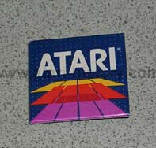
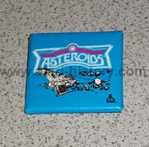
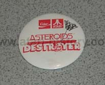
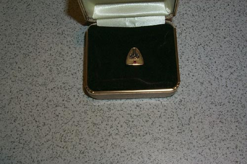
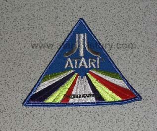
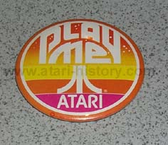
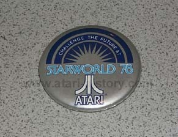
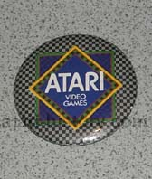

Atari designed and created a large assortment of
items for both
internal
employee's and for the public, these pages are just a sampling of some
of the numerous items Atari had made to memorialize
events and products such as:
Coffee Mugs, Buttons, Pens, Posters,
Paper Clips, Envelopes, Letter Openers,
Pen Sets, Stationary, License Plate Frames,
Hats, Shirts, Tie Clips, and
many other wonderful items...
  
Assorted Atari Pins


  
Atari 5 Year Employee Pin
Sew on Patch
Various Atari Pins.